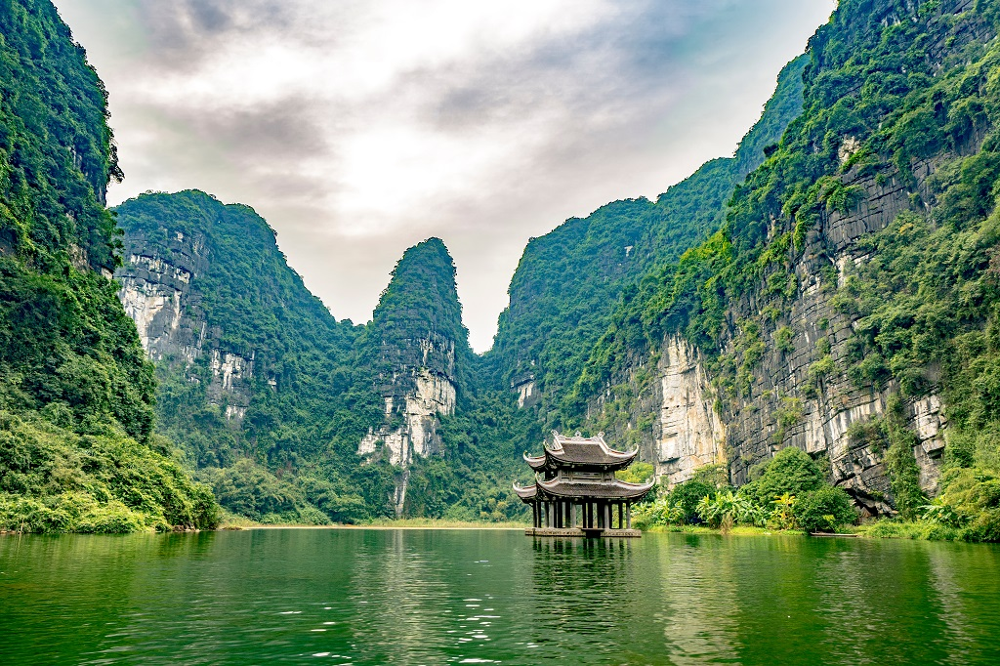

Nằm ở cực Nam của đồng bằng châu thổ sông Hồng, cách Hà Nội khoảng 90 km về phía Đông Nam, Quần thể danh thắng Tràng An có diện tích 6.172 ha, vùng đệm có diện tích 6.079 ha, với ba khu vực liền kề nhau là: Di tích quốc gia đặc biệt Cố Đô Hoa Lư, Khu danh thắng Tràng An - Tam Cốc - Bích Động và Rừng nguyên sinh đặc dụng Hoa Lư, thuộc địa bàn các huyện Hoa Lư, Gia Viễn, Nho Quan, thị xã Tam Điệp và thành phố Ninh Bình (tỉnh Ninh Bình).
Hòa quyện với cấu trúc và vẻ đẹp của cảnh quan các-xtơ là thảm rừng nhiệt đới nguyên sinh bao trùm khắp cảnh quan, quanh năm có sương sớm, mây chiều, khí núi. Những ngôi chùa, đền, phủ tựa mình bên vách đá với mái ngói cổ kính, rêu phong, thâm trầm tạo ra một yếu tố văn hóa tâm linh, chứa đựng những giá trị bản địa đồng điệu với cảnh quan. Chính những rặng núi cổ kính, các hang động bí ẩn và nhiều địa điểm linh thiêng của Tràng An đã truyền cảm hứng cho con người qua nhiều thế hệ. Tràng An - một hình mẫu nổi bật về sự tương tác giữa con người và môi trường qua thời gian ở khu vực Ðông - Nam Á trải qua hơn 30.000 năm phát triển, là nơi có giá trị lịch sử và văn hóa vô giá, kho thông tin nguyên vẹn về truyền thống cư trú của loài người; là một trong số ít các địa điểm có giá trị ở Ðông - Nam Á giữ được các đặc điểm ban đầu mà không bị ảnh hưởng lớn bởi con người và các tác nhân khác.
Ngày 23 tháng 6 năm 2014, tại Kỳ họp lần thứ 38 của Ủy ban Di sản Thế giới ở thủ đô Doha, Ca-ta, Ủy ban Di sản Thế giới đã chính thức Quyết định đưa Quần thể danh thắng Tràng An (Ninh Bình) vào Danh mục Di sản Văn hóa và Thiên nhiên Thế giới.

Chiếm gần như toàn bộ khối đá vôi Tràng An, với tuổi địa chất hơn 250 triệu năm, một khu vực hòa lẫn giữa thiên nhiên và văn hóa, Quần thể danh thắng Tràng An là vùng bán sơn địa có hướng phát triển chung Tây bắc - Đông Nam, thấp dần về phía Nam và Đông Nam. Đan xen trong các dải đá vôi Tràng An là hệ thống đa dạng các thung lũng, hố sụt các-xtơ cùng phương hoặc vòng cung, vách dựng đứng, đáy khá bằng phẳng ở các độ cao khác nhau. Nhiều thung lũng, hố sụt như ở đền Trần - Tràng An, Trường Yên, Bái Đính,… đã phát triển đến tận cơ sở xâm thực địa phương, trở thành các trũng các-xtơ đầm lầy, thông với nhau bởi mạng lưới thủy văn khá phát triển với nhiều hang động xuyên thủy. Thảm thực vật nguyên sinh phát triển rậm rạp trên đá vôi, trong đó, đáng kể nhất là rừng đặc dụng Hoa Lư ở phía Tây và Tây Nam.
Để bảo vệ giá trị nổi bật toàn cầu, tính toàn vẹn và xác thực của khu Di sản Văn hóa và Thiên nhiên Thế giới này, trong thời gian tới, chúng ta cần tăng cường hơn nữa công tác nghiên cứu, bảo vệ di sản trước những tác động ảnh hưởng đã được xác định trong Kế hoạch quản lý, cũng như khẩn trương xây dựng và hoàn thiện Quy hoạch tổng thể bảo quản, tu bổ, phục hồi và Quy chế bảo vệ Quần thể danh thắng Tràng An, làm cơ sở cho việc tu bổ, tôn tạo và phát triển bền vững di sản cho các thế hệ tương lai.
quay lại trang chủ